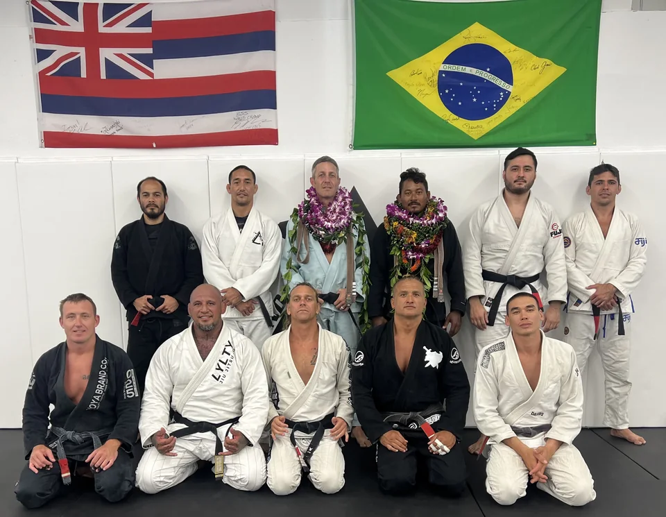
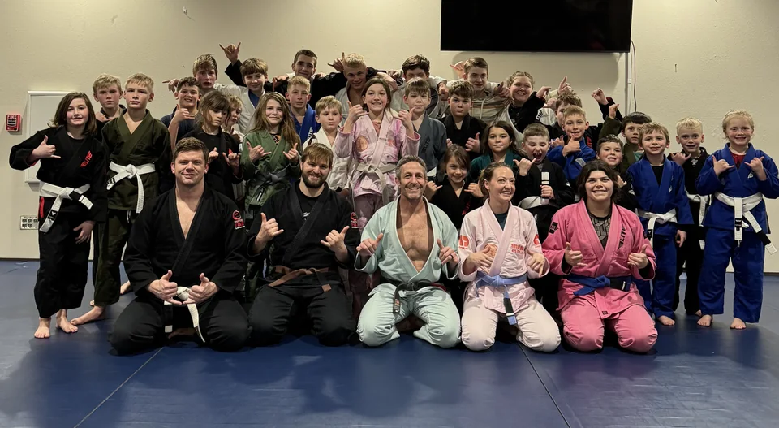

Professor Brandon Wiygul leads Island Jiu-Jitsu Washington with a focus on strong fundamentals, steady progress, and a welcoming place to train. His path through academies in Idaho, Colorado, and Hawaii shapes how he teaches today. Whether you are an adult beginner, a parent exploring training for your child, or a student pursuing competition, the aim is meaningful growth at your own pace.
Black-belt lineageProfessor “Surfah J” Vigil · Island Jiu-Jitsu
Academy homeArlington / Smokey Point, Washington
Our foundationTechnique · Discipline · Community
The path to the mats
A JOURNEY BUILT ON FUNDAMENTALS.
A Foundation in Boise
Brandon began Brazilian Jiu-Jitsu at Alliance in Boise, Idaho, under Professor Mitch Coates. That early training laid the groundwork for a practice built on careful technique and consistent effort, principles that remain central to his instruction.
Learning in Colorado
In Denver, Colorado, Brandon trained with the Kline Brothers and later at The Kompound under Professor Brad Nicolarsen. Learning in different training rooms broadened his experience before his career took him back to Boise and eventually to Oahu, Hawaii.
Growing in Hawaii
On Oahu, Brandon progressed from purple belt to black belt under Professor “Surfah J” Vigil. Alongside his own training, he taught adult classes and regularly assisted the youth program, gaining experience helping students at different stages of their development.

Lineage and leadership. Island Jiu-Jitsu black belts together in Hawaii.
From Hawaii to the Pacific Northwest
BUILDING IJJ WASHINGTON
Family needs brought Brandon back to the mainland and the Pacific Northwest. He and his wife, Lauren, an IJJ coach, established Island Jiu-Jitsu Washington. The academy began at the Arlington Boys & Girls Club, then moved into a permanent dojo as the community grew.
Today, IJJ Washington welcomes students from Arlington, Smokey Point, and the surrounding area. Training emphasizes high-level fundamentals and continuous improvement, with room for different goals. Students can work toward fitness, confidence, self-defense, or competition. Competing is a choice, not a requirement for belonging here.

Building Arlington community through Jiu-Jitsu. Students and adults together at the academy.
What we bring to every class
TECHNIQUE. DISCIPLINE. COMMUNITY.
The principles behind Professor Brandon’s instruction and the academy we are building together.
Technique
At IJJ Washington, sound fundamentals come first. Students are encouraged to understand how a movement works, practice it thoughtfully, and build skills step by step. Progress is about developing a reliable foundation, not rushing toward the next belt.
Discipline
Consistent practice creates opportunities to improve. Discipline means bringing attention to each lesson, respecting training partners, and staying open to feedback. It also means recognizing that learning takes patience, whether you are starting fresh or refining years of practice.
Community
A strong academy depends on how people treat one another. Respect and belonging matter here, across experience levels and personal goals. Training partners help each other learn, creating a community that values individual progress as well as shared effort.
Micah began Brazilian Jiu-Jitsu in 2018 at Vital Jiu-Jitsu in Fife, Washington, under black belts Kyle Mitchell and Nick Ryan. Career and family brought him to Arlington, where he trained locally before finding his home at Island Jiu-Jitsu under Professor Brandon.
His approach emphasizes purposeful training, awareness of individual limitations, and applying technique with appropriate intensity. Outside the academy, Micah is an ICU nurse, a musician, a husband, and a father of two boys.
You do not need experience or competitive ambitions to begin. Bring your curiosity, take the first step, and discover what Jiu-Jitsu can add to your life. Ask about our 3 months for $300 offer.